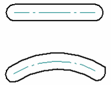
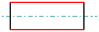
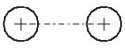
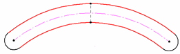
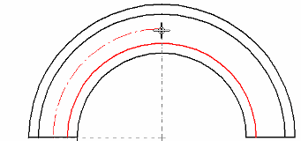
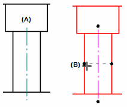
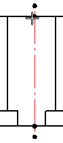

Centerline command
The Centerline command places a centerline annotation on the selected element, based on the options specified on the Centerline command bar. You can modify the centerline properties using the Center Line and Center Mark Properties dialog box.
Linear and curved centerline types
You can select the Line option to add a straight centerline to linear geometry. You can use the Arc option to add a centerline annotation to a curved object, such as a slot.

Centerline placement options
Centerline placement options depend on the centerline type.
- Linear centerline
-
When the centerline type is set to Line, you can select any of the following placement options:
-
Midway between two lines.

-
Between two key points on an element, such as the center of a circle.

-
In free space.
-
- Curved centerlines
-
When the centerline type is set to Arc, you can place the centerline:
-
By selecting two concentric arcs.

-
By selecting a center point, a start point and an end point.

-
- Centerline edit handles
-
You can use the edit handles at each end of the centerline to adjust its length.
Centerline attachment handles
You can reattach detached centerlines using attachment handles. The handles differ for centerlines created using the By 2 Lines option and the By 2 Points option.
-
For centerlines placed By 2 Lines—You can reattach the centerline annotation (A) by dragging the attachment handles onto the lines that the annotation references (B).

-
For centerlines placed By 2 Points—Use the two inside handle points to reattach the centerline at the connection points.

-
You also can detach these handles using Alt+drag.
Similar behavior applies to centerlines created using the By 2 Arcs option and the By Center Point option.
How do I
Automatically create centerlines and center marks in a drawing viewAutomatically remove centerlines and center marks from a drawing view
Place a center mark
Place a centerline midway between two lines
Place a centerline on a slot
Place a center axis on a cylinder or hole feature
Example: Dimension a curved slot
Place a bolt hole circle
Learn more
Centerlines, center marks, and bolt hole circlesLook up more details
Automatic Centerlines commandAutomatic Centerlines command bar
Centerline and Center Mark Options dialog box
Center Mark command
Center Mark command bar
Centerline command bar
Center Line and Center Mark Properties dialog box
Bolt Hole Circle command
Bolt Hole Circle command bar
Bolt Hole Circle Properties dialog box